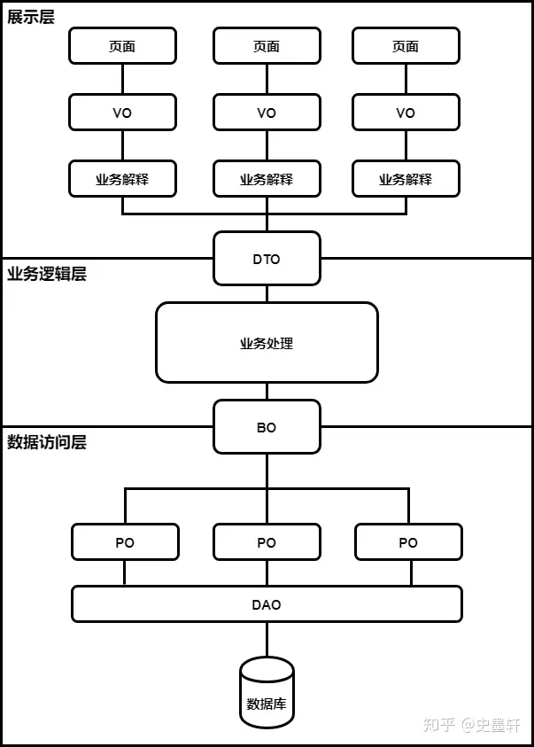

Intro
Java开发中常碰到一些类名的后缀，比如POJO，VO，BO等等，一直没有完全了解这些类名具体的涵义和表达的概念，在此做个记录。
POJO
POJO（Plain Old Java Object），从字面上翻译为“纯洁老式的Java对象”，更多被称为简单的Java对象，是为了避免和EJB（Enterprise Java Bean，J2EE的一部分，企业级服务端开发组件）混淆所创造的简称。
在2000年左右，EJB（Enterprise Java Bean）大行其道，这让Martin Fowler、Rebecca Parsons和Josh MacKenzie等人感到很困惑。后来他们发现人们之所以不愿意在他们的系统中使用普通的Java对象，是因为其缺少一个酷炫的名字，因此他们在一次会议上给普通的Java对象起了个名字——POJO（Plain Old Java Object）。
——张建飞《代码精进之路：从码农到工匠》
POJO的内在含义是指：那些没有继承任何类、也没有实现任何接口，更没有被其它框架侵入的Java对象。
JavaBean
JavaBean实际上是指一种特殊的Java类，它通常用来实现一些比较常用的简单功能，并可以很容易的被重用或者是插入其他应用程序中去。所有遵循“一定编程原则”的Java类都可以被称作JavaBean。
JavaBean必须遵循的预定：
- 这个类必须具有一个公共的(public)无参构造函数；
- 所有属性私有化（private）；
- 私有化的属性必须通过public类型的方法（getter和setter）暴露给其他程序，并且方法的命名也必须遵循一定的命名规范。
- 这个类应是可序列化的。（比如可以实现Serializable 接口，用于实现bean的持久性）
JavaBean在Java EE开发中，通常用于封装数据，对于遵循以上写法的JavaBean组件，其它程序可以通过反射技术实例化JavaBean对象（内省机制），并且通过反射那些遵循命名规范的方法，从而获知JavaBean的属性，进而调用其属性保存数据。
这些要求主要是靠约定而不是靠实现接口，所以许多开发者把JavaBean看作遵从特定命名约定的POJO。
可以这么理解，POJO按JavaBean的规则来，就可以变成JavaBean。
PO
PO（Persistent Object），持久对象。
ORM（Object Relational Mapping），对象关系映射，就是将对象与关系数据库绑定，用对象来表示关系数据。
PO是伴随ORM出现的概念，比如Hibernate就是一个ORM框架。
PO通常对应数据模型，本身还有部分业务逻辑的处理。可以看成是与数据库中的表相映射的Java对象。最简单的PO就是对应数据库中某个表中的一条记录，多个记录可以用PO的集合。PO中应该不包含任何对数据库的操作。
在一些ORM工具中，能够做到维护数据库表记录的PO完全是一个符合Java Bean规范的POJO。
DTO
DTO（Data Transfer Object），也称为TO，数据传输对象。
将PO中的部分属性抽取出来，就形成了DTO，主要用于远程调用等需要大量传输对象的地方。
比如我们一张表有100个字段，那么对应的PO就有100个属性，但是我们界面上只要显示10个字段。客户端调用接口来获取数据，没有必要把整个PO对象传递到客户端，可以用只有这10个属性的DTO来传递结果到客户端，这样也不会暴露服务端表结构。到达客户端以后，如果用这个对象来对应界面显示，那此时它的身份就转为VO（View Object）。
VO
VO
- Value Object，值对象
- View Object，表现层（视图）对象
Value Object是业务对象，通常用于业务层之间的数据传递，和PO一样也是仅仅包含数据而已，但应是抽象出的业务对象，VO的属性是根据当前业务的不同而不同的，可以和表对应，也可以不对应。
View Object是对应页面显示的数据对象，可以简单理解为交给前端处理的JSON对象，和Value Object类似，根据业务需要，可以选择与表对应或不对应。
DAO
DAO（Data Access Object），数据访问对象。
在Web开发中常见的一个对象，和上面的O有本质区别，它不像上面的几个O可以互现转化，主要用来封装对数据库的访问。
在MyBatis框架中，Mapper就是DAO。
BO
BO（Business Object），业务对象。
主要作用是把业务逻辑封装为一个对象。这个对象可以包括一个或多个其它的对象。即在DAO基础上添加了业务方法，结合了PO、VO进行业务操作。
比如一个简历，有教育经历、工作经历、社会关系等等，我们可以把教育经历对应一个PO，工作经历对应一个PO，社会关系对应一个PO。最后建立一个对应简历的BO对象处理简历，每个BO包含这些PO，处理业务逻辑时我们针对BO去处理，比如调用DAO的方法实现PO、VO的转换等。
DO
DO，现在主要有两个版本的概念，都与上述的O重复：
- 阿里巴巴的开发手册中的定义，Data Object，等同于上面的PO。
- DDD（Domain-Driven Design）领域驱动设计中，Domain Objec，等同于上面的BO。
Outro
最后放一张总结图，来自一篇文章讲清楚VO，BO，PO，DO，DTO的区别：

复习一遍《阿里巴巴Java开发手册》里关于POJO的约定：
【强制】POJO 类中布尔类型的变量，都不要加 is 前缀，否则部分框架解析会引起序列化错误。
【参考】POJO是DO/DTO/BO/VO的统称，禁止命名成xxxPOJO。
【强制】所有的 POJO 类属性必须使用包装数据类型。
【强制】定义 DO/DTO/VO 等 POJO 类时，不要设定任何属性默认值。
【强制】POJO 类必须写 toString 方法。
【强制】POJO 类的布尔属性不能加 is，而数据库字段必须加 is_，要求在 resultMap 中进行 字段与属性之间的映射。
【强制】不要用 resultClass 当返回参数，即使所有类属性名与数据库字段一一对应，也需 要定义;反过来，每一个表也必然有一个 POJO 类与之对应。
最后更新： 2023年01月06日 19:01
原始链接： http://muquanrui.com/2023/01/06/Programming/Tech%20Note/%E5%90%84%E7%A7%8DPOJO/